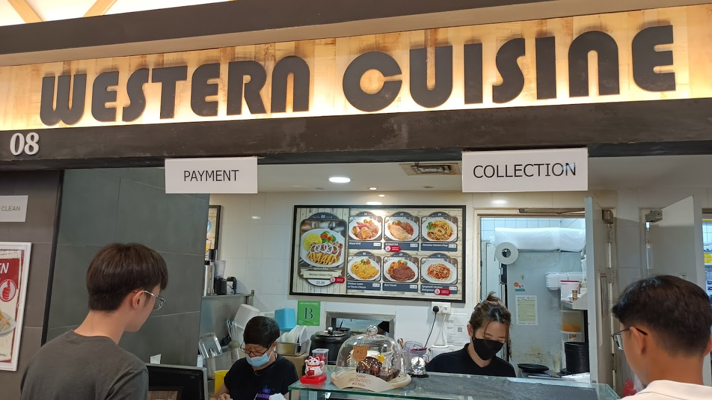

Our Information:
Phone Number: +65 68777528
Email: westernexpress@gmail.com
Physical Address: 180 Ang Mo Kio Avenue 8
#A235, Block A Nanyang Polytechnic
Singapore 569830
Over 100+ 5 stars review on Foodpanda
Additional Information:
We are a western food stall located in Nanyang Polytechnic's only air-conditioned food court. We provide premier western food at an affordable cost for you to enjoy. We only use the freshest of ingredients and cook them to perfection to ensure we satisfy your fried food cravings.